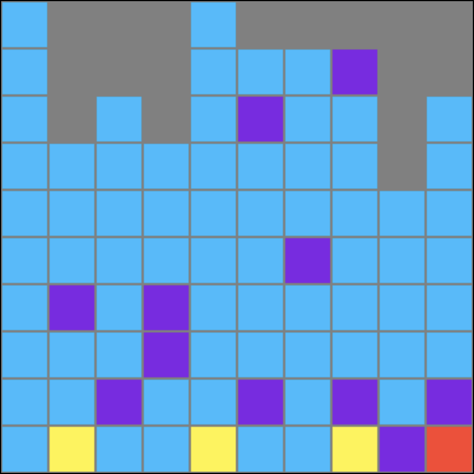
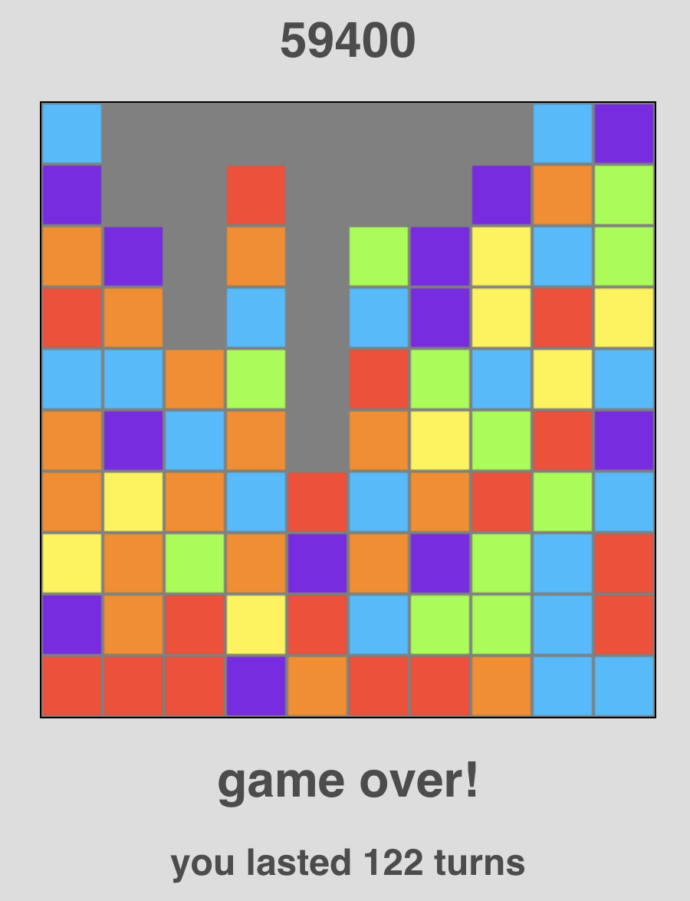

About Color Match
You've probably already figured out the basics. You click colors and they clear and eventually it gets hard and the blocks overflow. The score for each clear is calculated as an arithmetic sequence. For example, if you cleared three blocks at once, you would get 10 + 20 + 30 = 60 points. So, the best way to get a ton of points is to make really big combos by focusing on one color for a while until it is impossible to make more room. Here is an example of a pretty big combo:
Here I got 68 blue blocks together and cleared them for 28460 points. You'll notice I couldn't make this particular combo any bigger because the leftmost column was filled all the way up with blues.
But, while you're building these big combos, you have to be smart about not making too many tiny moves. If you can, clear junk blocks in a way that let you clear more at once. The game doesn't get harder based on how many blocks you clear; it gets harder based on how many groups you clear. After enough clears, you'll be dealing with six colors and you'll only have two turns before a new row appears at the bottom.
This is where the "rush blocks" button is pretty helpful. You can give yourself more blocks to work, and it doesn't count as a move. Therefore you can really take advantages of those early stages where you're only dealing with three or four colors.
Even when you're dealing with lots of colors, you can still squeeze out a lot of points by thinking ahead and connecting large block groups by dropping the right columns.
My high score is 59400 and I challenge everyone and anyone to beat it. It's a really good score. If you beat that score, email me at colegranof@gmail.com with a screenshot or recording or whatever. Even though it's pretty easy to cheat, I'll probably believe you since I'm not giving out prizes or anything so I don't see a lot of reason to cheat. (So please don't cheat.)
